本地阅读版，依据出版社提交至PMC的原始JATS XML整理，供核对正文、图注、表格和原图。原始main.xml完整保留；此页不是出版社版式PDF。所有数字与正文冲突均保留原文，未修正或推算。实验准入状态见逐篇审核表。
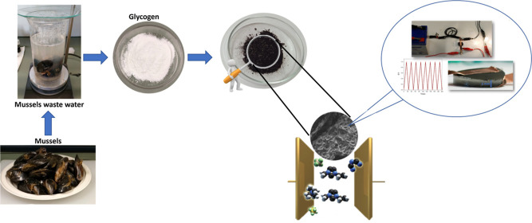
Waste, in particular, biowaste, can be a valuable source of novel carbon materials. Renewable carbon materials, such as biomass-derived carbons, have gained significant attention recently as potential electrode materials for various electrochemical devices, including batteries and supercapacitors. The importance of renewable carbon materials as electrodes can be attributed to their sustainability, low cost, high purity, high surface area, and tailored properties. Fish waste recovered from the fish processing industry can be used for energy applications and prioritizing the circular economy principles. Herein, a method is proposed to prepare a high surface area biocarbon from glycogen extracted from mussel cooking wastewater. The biocarbon materials were characterized using a Brunauer–Emmett–Teller surface area analyzer to determine the specific surface area and pore size and by scanning electron microscopy coupled with energy-dispersive X-ray analysis, Raman analysis, attenuated total reflectance Fourier transform infrared spectroscopy, X-ray diffraction, X-ray photoelectron spectroscopy, and transmission electron microscopy. The electrochemical characterization was performed using a three-electrode system, utilizing a choline chloride-based deep eutectic solvent (DES) as an eco-friendly and sustainable electrolyte. Optimal time and temperature allowed the preparation of glycogen-based carbon materials, with a specific surface area of 1526 m2 g–1, a pore volume of 0.38 cm3 g–1, and an associated specific capacitance of 657 F g–1 at a current density of 1 A g–1, at 30 °C. The optimal material was scaled up to a two-electrode supercapacitor using a DES-based solid-state electrolyte (SSE@DES). This prototype delivered a maximum capacitance of 703 F g–1 at a 1 A g–1 of current density, showing 75% capacitance retention over 1000 cycles, delivering the highest energy density of 0.335 W h kg–1 and power density of 1341 W kg–1. Marine waste can be a sustainable source for producing nanoporous carbon materials to be incorporated as electrode materials in energy storage devices.
The journey to find new environmentally friendly energy systems is essential to minimize the impact associated with the consumption of fossil fuel energy worldwide. Ground-breaking devices must be developed to produce energy storage devices with a higher capacity and a longer lifetime.1 To accomplish this, electrical double-layer capacitors (EDLCs), pseudocapacitors,2 and flexible solid-state supercapacitors3 are essential components of a smart grid network.
Appropriate candidates for EDLC electrodes are different types of carbon nanomaterials. The ability to control the materials’ morphological properties (size, shape, surface morphology, pore diameters, and high surface area) is essential since it allows them to optimize their performance.4 Carbon-based materials can adsorb and store many ions owing to the excellent pore structure and large specific surface area, exhibiting excellent electric double-layer capacitance performance. Carbon presents three allotropes (graphite, diamond, and amorphous carbon), with different hybridizations (sp, sp2, and sp3), and is also the main component of carbon-based nanostructures: carbon nanotubes (CNTs), graphene, carbon nanofibers, nanorods, nanospheres, and activated carbons (AC).5 Due to their interesting morphological characteristics, higher capacitance can be achieved using electrodes based on porous carbon materials. Nowadays, the approaches to synthesizing AC give the possibility to produce materials with specific surface areas up to 3000–4000 m2 g–1.6−9 Graphene oxide (GO),10,11 reduced graphene oxide (rGO),12 and carbon nanotubes (CNTs),13 as well as their hybrids, have shown great potential in energy storage applications due to their unique physical and chemical properties. These carbon materials present a high surface area and excellent electrical conductivity, which make them ideal materials for supercapacitors and batteries. The hybrid combination (rGO and CNTs) improved the electrochemical performance compared to either material alone.14 These materials were also applied for sensing purposes, with GO and rGO being quite studied for biosensing approaches for detecting Alzheimer’s biomarkers15 and determining dopamine.11 However, finding sustainable carbon sources to decrease the world’s need to rely on fossil fuels is becoming even more necessary. Using carbon sources from waste must be the solution to obtain more sustainable energy storage devices and improve the circular economy. Recently, the synthesis of carbons using biomass (energy source mostly referring to plant and animal-derived materials) as a precursor has granted the design of carbon-based energy storage systems with remarkable electrochemical and mechanical properties.8,9
Because biomass is present naturally on the planet, biomass-derived materials were used in different applications, such as catalysis and energy storage.16 Various carbonization methods can be used for biomass conversion into carbon: pyrolysis and hydrothermal carbonization, with/without activation methods (chemical and physical activations).17 Among various biomass resources, waste materials have drawn significant attention as a valuable resource for the environmentally friendly preparation of carbons with a high specific surface area and with a boosted electrochemical supercapacitor performance.18−22
The synthesis and applications of carbon materials prepared from biomass have been extensively reviewed,23−28 while biomass-derived carbons from marine waste were recently reviewed by Lionetto et al.(29) Several studies on the capability of porous carbon-based electrodes from fish waste for supercapacitor applications have been reported, using different types of fish waste sources, from crab shells, fish and prawn scales, fish bones, and others.16,30−34 The obtained materials presented Brunauer–Emmett–Teller (BET) surface areas ranging from 1670 to 962 m2 g–1, with an associated specific capacitance ranging from 58 F g–1 at 5 A g–1 to 519 F g–1 at 0.1 A g–1. Considering the existing studies, the surface area and specific capacitance are not always strictly correlated (both increasing or decreasing), mainly because both can be affected by porosity and the functional groups of porous carbons.35
Even though carbon allotropes are the most explored materials for application in energy storage, these materials still present some drawbacks, such as scarcity, cost, agglomeration during synthesis trend, large-scale production obstacles, high hydrophobicity, and ineffective surface areas for charge storage vs. electrolyte nature.36
All over the world, fish can be obtained through capture and/or aquaculture. It is estimated that between 30 and 70% of the raw material processed by the seafood industry are discarded as solid waste. In the rejected biomass are the species undervalued and underutilized, fish caught below the minimum size (prohibited sale), spoiled or damaged fish, viscera, head, bones, fillets, skin, and scales.37 Marine waste biocarbons are nitrogen, oxygen, hydrogen, and sulfur-rich materials exhibiting promising characteristics29 (strong hydrophilicity, sustainability, biodegradability, and self-doping of heteroatoms). Additionally, mussel processing canning industries generate a considerable volume of highly polluting cooking wastewater (more than 300.000 m3 year–1) that is not effectively depurated by chemical oxidation and/or anaerobic digestion.38 This stream is composed of protein, mineral salts, and mainly glycogen. Glycogen is a high-molecular-weight polysaccharide formed by glucose chains linked by α-1,4-glycosidic bonds and branched (with α-1,6-glycosidic bonds) by other glucose chains every 12–18 units of the monosaccharide. This biopolymer is the natural reservoir of glucose for animal tissues, including humans and mussels, being an excellent source of carbon for microbial bioproduction39−41 and a valuable cosmetic ingredient.42
Even though the use of glycogen as a carbon precursor for application as an electrode in energy storage devices was not reported in the literature, starch is another polysaccharide that is being reasonably addressed as a carbon precursor for application in supercapacitors. Kasturi et al.(43) prepared a high surface area (1841 m2 g–1), porous (1.18 cm3 g–1)-based activated carbon obtained from Artocarpus heterophyllus seed-derived starch, with a capacitance of 240 F g–1 at 0.5 mA and a capacitance retention of 97% after 2000 cycles, using a starch-based solid-state electrolyte. Pang et al.(44) fabricated a porous carbon from corn starch with a high specific surface area of 1239 m2 g–1, delivering a specific capacitance of 144 F g–1 with a KOH electrolyte. Regarding applying these materials to supercapacitors, focusing on the electrolyte is also necessary. Numerous types of electrolytes were tested for supercapacitor applications.16,29−32,34,35,37,45−47 However, a prerequisite is the high ionic concentration of the electrolyte, which improves its capacitance. On one hand, ionic liquids (ILs) present the required properties to be suitable candidates.48,49 However, their high production/purification costs drastically reduce their attractiveness compared to conventional electrolytes. The solution can be found using deep eutectic solvents (DESs), which show similar physical properties. DESs were developed by Abbott et al.,50 consisting of a mixture of a quaternary ammonium salt (choline chloride) with amides or glycols (ethylene glycol, glycerol...) as hydrogen bond donors. This new class presents several advantages compared to aqueous systems: improved electrochemical stability, broader potential windows, a greener effect on the ecosystem, etc., showing that DES systems are promising green alternatives.36,51−54
Considering the above, the present investigation reports biowaste materials to develop high-performance porous carbon materials, followed by employing a DES as an eco-friendly electrolyte.
The present work used glycogen extracted from mussel cooking wastewater as the starting material. Biocarbons were prepared by one-step carbonization in which temperature and time were the objects of optimization. The resulting biocarbon materials were characterized using a BET surface area analyzer to determine the specific surface area and pore size and by scanning electron microscopy (SEM) coupled with energy-dispersive X-ray (EDX) (SEM–EDX) analysis, Raman analysis, attenuated total reflectance Fourier transform infrared (ATR-FTIR) spectroscopy, X-ray diffraction (XRD), X-ray photoelectron spectroscopy (XPS), and transmission electron microscopy (TEM). The electrochemical analysis was performed using a three-electrode system, with a glassy carbon (GC) electrode as the working electrode, through cyclic voltammetry (CV) and galvanostatic charge/discharge (GCD) measurements using a choline chloride-based DES, with ethylene glycol as the hydrogen bond donor, as the electrolyte (known as ethaline). The carbon material with the best performance was used as an electrode for developing a supercapacitor prototype using a solid-state electrolyte (SSE) based on the previous DES used as the liquid electrolyte (SSE@DES).
These materials derived from biowaste, associated with an eco-friendly electrolyte, can be a step forward to developing safe and reliable energy storage devices capable of charge and discharge with a longer cycle life, bringing many benefits to the world’s transition to clean energy. The presented research aims to develop more cost-effective harvest storage systems based on energy storage at an EDL carbon/electrolyte structure. Studying charge storage mechanisms may lead to accessible energy for all, with the development of more efficient harvest/storage systems used daily by the general population. It meets the 7th, 11th, and 12th goals in the UN 2030 Agenda, targeting economic/societal needs and scientific advances toward safer, non-polluting, more affordable, and more efficient energy use.
Industrial mussel cooking wastewater (MCW) was kindly supplied by Valora Marine Ingredients (Grupo Jealsa, Boiro, Galicia, Spain). Initially, MCW was concentrated by ultrafiltration with membranes with a molecular weight cut-off of 100 kDa (spiral polyethersulfone, 0.56 m2, Prep/Scale-TFF, Millipore Corporation, USA). Then, most of the protein content in the concentrate was precipitated at the isoelectric point by adding 5 mol L−1 HCl until reaching pH 4.5 and centrifuged (8000 g/30 min) to eliminate the protein material in the sediment. The supernatant was treated with 96% ethanol (1 volume of supernatant/0.75 volume of ethanol, for 2 h, under continuous agitation at 200 rpm), and the mixture was centrifuged (8000 g/20 min) for the differential precipitation of glycogen. Finally, the precipitated glycogen (purity: > 97.5%, average molecular weight: 2551 kDa, and polydispersity index: 1.55) was dried in a laboratory oven (with forced convection) at 60 °C for 12 h.
The raw biomass was placed inside a tubular furnace at 1000 °C for 1 h with a 0.3 L h–1 N2 flow-controlled environment to further collect the ashes (45 wt % recovery). The carbon material will be characterized by considering the carbonization time and temperature.
The morphological characterization was performed through BET surface area analysis, SEM–EDX (Hitachi SU 8230 equipment, Tokyo, Japan), Raman analysis (Ramos PA532 Ostec, Moscow, Russia), ATR-FTIR spectroscopy (Bruker FTIR system Tensor 27 spectrophotometer, Massachusetts, USA), XRD (Rigaku Corporation, Tokyo, Japan), XPS (Kratos Analytical Ltd, Manchester, UK), and TEM (Hitachi model H8100, Tokyo, Japan). Characterization details are presented in the Supporting Information.
Electrochemical characterization details of glycogen-based carbon samples (three-electrode and two-electrode setups), alongside the preparation of the liquid and solid DESs, are presented in the Supporting Information.
The morphological characterization and the elemental composition of the glycogen-based carbons were studied to determine how their capacitive behavior was affected, considering the distinct carbonization parameters (time and temperature). The electrochemical investigation included CV and GCD measurements to validate the capacitive performance of the electrode.
The adsorption–desorption isotherms were used to get qualitative and quantitative knowledge about the materials’ surface area and pore structure. The adsorption–desorption isotherms of the glycogen-based carbons for different carbonization times and temperatures were obtained, and as an example, three isotherms are presented in Figure 1.
Relationship between the adsorbed and desorbed volumes of N2 by the glycogen-based carbons and the relative pressure. Glycogen carbonized at 1000 °C for 1 h (a) and 5 h (b) and at 750 °C for 1 h (c). The black line and symbols represent adsorption, and the red line and symbols represent desorption.
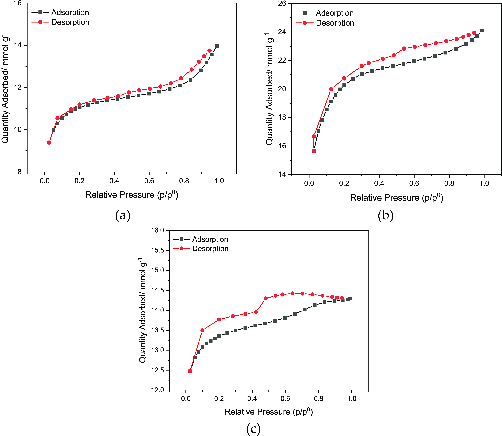
It is observed that the presented three isotherms show different characteristics; however, the isotherms present the same trends, being classified as Type IV class, given by the Brunauer, Deming, and Teller (BDT) classification.55 The main characteristic feature is their hysteresis loop, which is correlated to capillary condensation in the mesopores. The microporous structure of the material was confirmed by the fact that the pores filled at relatively low pressures, as demonstrated in Figure 1a,b.
Table 1 presents the results obtained from the BET analysis of glycogen-based carbons for different periods and temperatures of carbonization.
| BET analysis | |||||||
|---|---|---|---|---|---|---|---|
| T (°C) | time (h) | SBET (m2 g–1) | Vmicro (cm3 g–1) | Vmeso (cm3 g–1) | Vtotal (cm3 g–1) | Dp (Å) | |
| glycogen-based carbons | 1000 | 0.5 | 146.1 | 0.065 | 0.014 | 0.079 | 21.89 |
| 1 | 768.1 | 0.287 | 0.179 | 0.466 | 24.27 | ||
| 2 | 828.2 | 0.304 | 0.210 | 0.514 | 24.84 | ||
| 3 | 974.9 | 0.313 | 0.252 | 0.565 | 23.99 | ||
| 4 | 1277 | 0.414 | 0.434 | 0.848 | 26.55 | ||
| 5 | 1526 | 0.377 | 0.520 | 0.897 | 33.21 | ||
| 6 | 909.5 | 0.409 | 0.085 | 0.494 | 21.72 | ||
| 7 | 627.7 | 0.216 | 0.140 | 0.356 | 20.11 | ||
| 500 | 1 | 42.0 | 0.023 | 0.028 | 0.051 | 10.12 | |
| 750 | 93.0 | 0.039 | 0.028 | 0.067 | 13.32 | ||
| 900 | 123.1 | 0.051 | 0.222 | 0.273 | 21.66 | ||
| 1200 | 31.4 | 0.072 | 0.005 | 0.077 | 9.871 | ||
Vmicro: micropore volume; Vtotal: total pore volume; Vmeso: mesopore volume; and Dp: particle diameter.
As presented in Table 1, the mesopore volume increases with the carbonization time (at the fixed temperature of 1000 °C), reaching the highest value of 0.520 cm3 g–1 for 5 h. Considering the temperature change, there is a maximum value of mesopore volume of 900 °C, compared to lower and higher temperatures. Cazetta et al.,56 Rodríguez-Sánchez et al.,57 and Ozpinar et al.(58) produced activated carbons from the waste of coconut shells, chestnuts, and hazelnut shells, respectively, presenting lower values of mesopore volume. Porous materials are generally divided into three groups: microporous (<20 Å), mesoporous (20–500 Å), and macroporous (>500 Å), according to the International Union of Pure and Applied Chemistry (IUPAC). Considering this, most samples present mesoporous characteristics, except for the carbonization at 500, 750, and 1200 °C.
The specific surface area (SBET), of the materials prepared at a fixed temperature of 1000 °C, increased with the increase of the carbonization time, reaching a maximum of 1526 m2 g–1 at 5 h, with a maximum pore diameter of 33.21 Å. Regarding the temperature variation, the highest value of SBET was obtained for 1000 °C, while values between 500 and 900 °C, alongside 1200 °C, present very low values of SBET.
FTIR spectra of glycogen-based carbons, at different carbonization times and temperatures in the range of 4000–750 cm–1, are presented in Figure 2a,b.
FTIR-ATR spectra of glycogen-based carbons: (a) temperature effect; (b) time effect; (c) water from the collector flask; and (d) comparison between raw glycogen, glycogen-based carbon (3 h at 1000 °C), and associated water from collector flask.
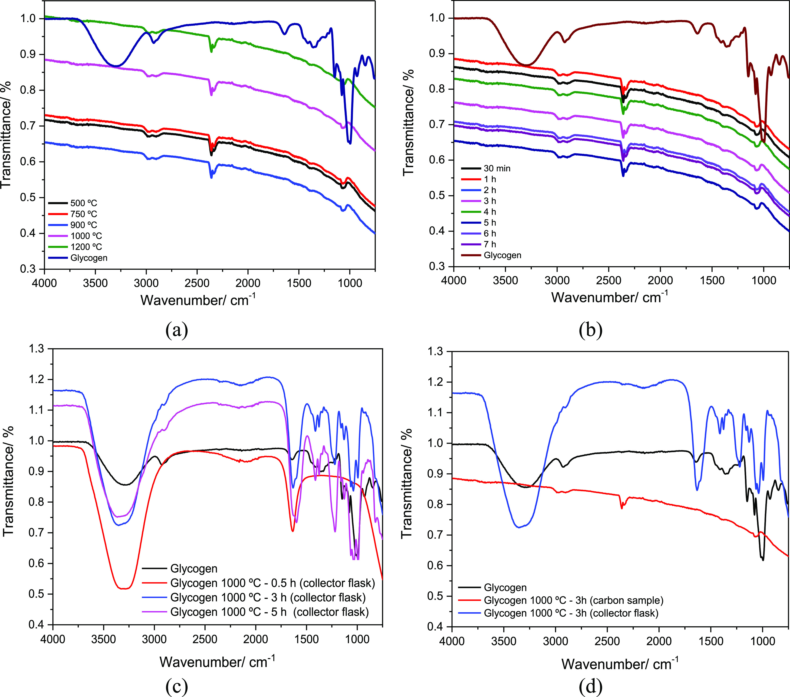
Figure 2c presents the FTIR-ATR spectra of the raw glycogen sample and the components obtained after carbonization of the glycogen, which is received in the water of the collector flask. Figure 2d presents the comparison between the raw glycogen material and the analysis of the carbon obtained after 3 h of carbonization and the elements trapped in the water of the collector flask.
The raw glycogen spectra show a large band in the 3500 and 3000 cm–1 wavenumber range due to the stretching vibrations of the hydroxyl (−OH) groups, which disappear with the carbonization of the raw glycogen. Around 1000 cm–1 is the band assigned to the stretching vibration of the C–O group. The functional groups having oxygen stimulate the hydrophilic properties of the surface. Furthermore, the double band observed between 1089 and 1043 cm–1 in the spectrum of raw glycogen, also visible in the carbonized samples (with much lower intensity), is associated with the =C–O–C band vibration in aromatic ether.59
In all carbonized samples, the band observed between 2900 and 2800 cm–1 belongs to the C–H bands of aliphatic hydrocarbons, presenting a low intensity.60,61 The band at around 2350 cm–1 matches the aromatic ring (C=C) stretching vibrations associated with CO2, always present in the carbonized samples.62
The morphology of the glycogen-based carbons obtained at different carbonization times (with a fixed temperature of 1000 °C) and carbonization temperatures (with a specified time of 1 h) was verified by SEM, and the images are shown in Figures 3 and S1 (Supporting Information), respectively. Two magnifications were presented at ×100 and ×1.00k.
SEM images of different carbonization times (30 min to 7 h), at 1000 °C, at ×100 magnification; inset: at higher magnification, ×1.00k.
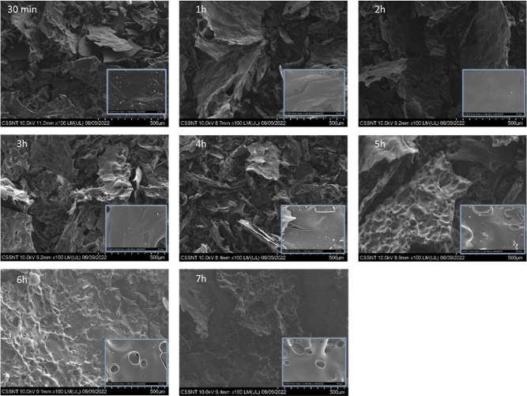
EDX was also performed, which presents the most abundant element, carbon (up to 98%), with traces of oxygen (up to 4%), nitrogen (up to 5%), phosphorus (up to 2%), calcium (up to 4%), and sulfur (up to 2%), in weight %, which is expected taking into consideration the organic source of the samples.
The organic elements in the raw material structure decompose when heated during carbon synthesis. Consequently, a porous structure with a superior carbon content is formed as the volatile components split from the structure.58
All images demonstrate a compact bulk structure, with all morphologies being strongly correlated with time and temperature. The porosity increases at a longer carbonization time. However, that effect seems to disappear after 6 h of carbonization. It is visible that the pore structure of the samples presents several pores that expose a large, and activated surface area. This allows the shortening of the ions’ diffusion paths, which may improve the electrochemical properties of these materials.63
Regarding the change in temperature, at 500, 750, 900, and 1200 °C, carbonized for 1 h (Figure S1), at ×100 magnification, the structures are visibly less porous compared to the sample carbonized at 1000 °C for 1 h (Figure 3). All samples, with different times and temperatures of carbonization, present non-uniform topographic structures with random indentations and protrusions. The surface morphology and pore structure of the glycogen-based carbon samples were confirmed by TEM analysis. The result of TEM micrographs at different magnifications is shown in Figure 4.
TEM images of glycogen-based carbons (1 h at 750 °C and 1, 3, 4, and 5 h at 1000 °C).
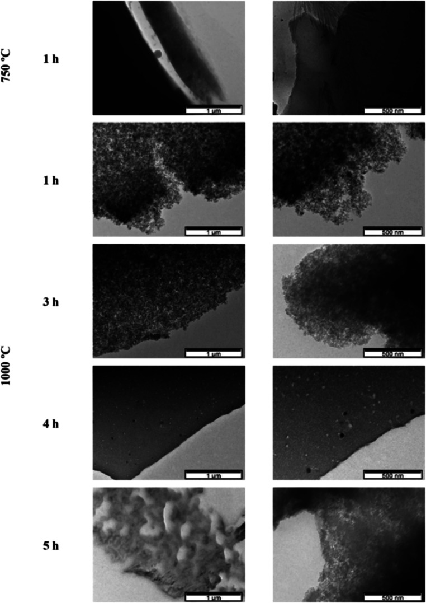
The layer-like morphology is evident in all presented samples, as is quite visible in glycogen-based carbon (4 h, 1000 °C). At 5 h carbonization, the well-defined pore structure is evident, which can be quite beneficial for the electrolyte ions to move to the carbon electrode (in the supercapacitor setup), achieving a high specific capacitance and excellent performance.64
The XPS spectra of the raw glycogen are presented in Figure S2, with the associated deconvoluted peaks for carbon, oxygen, and nitrogen.
The two dominant peaks at 284.9, 529.9, and 397.7 eV binding energies correspond to C 1s, O 1s, and N 1s, respectively.65 The XPS spectra of the glycogen carbonized for 5 h at 1000 °C are presented in Figure 5, with the associated deconvoluted peaks for carbon, oxygen, and nitrogen. Tables S1 and S2 (Supporting Information) show the related results for all the analyzed samples.
XPS survey spectra for glycogen-based carbon carbonized for 5 h at 1000 °C: (a) overall spectra, (b) C 1s, (c) O 1s, and (d) N 1s.
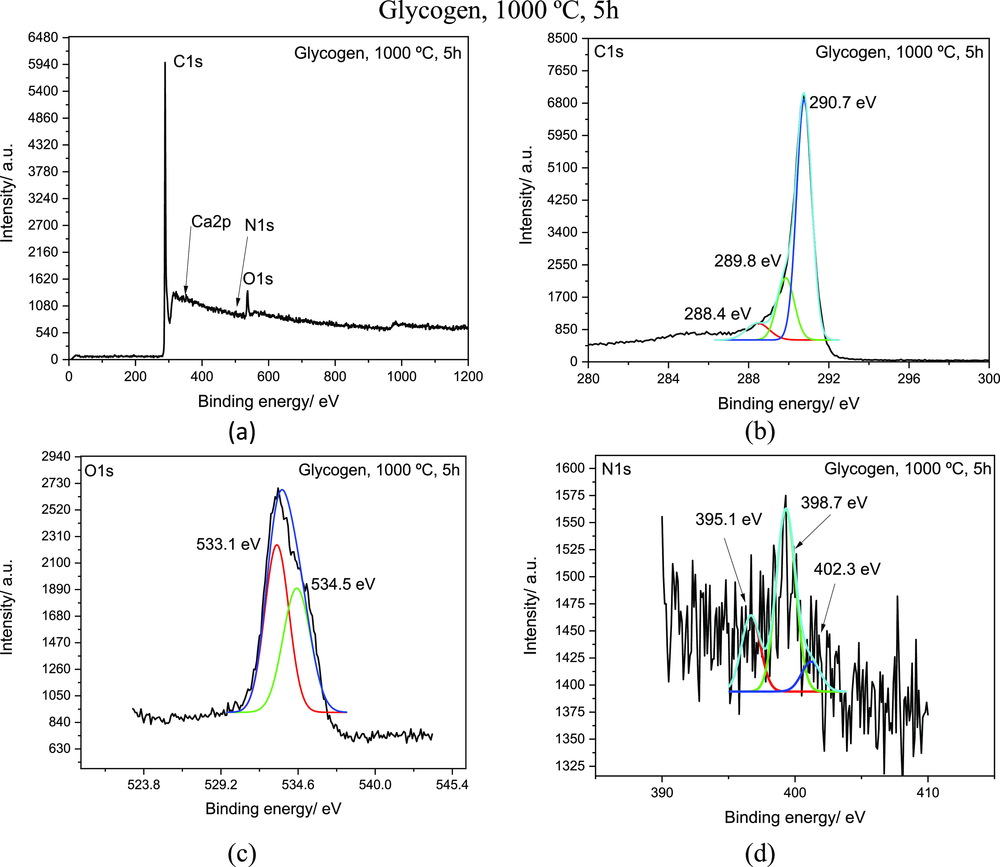
The two dominant peaks reported at 290.7, 533.1, and 398.7 eV binding energies correspond to C 1s, O 1s, and N 1s, respectively.65 These results showed that for all samples, there are graphitic carbon, oxygen, and nitrogen-containing groups in the structure of the carbon material.
All the samples were studied at different times and temperatures of carbonization to search for various components, such as C 1s, N 1s, O 1s, Na 1s, P 2p, S 2p, K 2p, and Ca 2p.
Tables S1 and S2 show that C 1s is the most abundant element for all samples. N 1s is present in all samples, having the highest value of 7.2 at% for the 5 h carbonization at 1000 °C. The exception is the sample prepared at 30 min and the lowest carbonization temperature (500 °C), in which N 1s is non-detected. The O 1s element is present in all studied samples, with the highest value for 1 h carbonization at 1000 °C, 11.6 at%.
The remaining elements are also expected to be present in the samples due to the organic sources of the raw material, glycogen, being corroborated by the SEM–EDX analysis. The raw glycogen was also analyzed, showing a considerably lower amount of carbon, followed by oxygen which presents higher values up to ×10 before the carbonization process. The amount of N is also lower, before carbonization, with the exception of the 7 h carbonized samples.
The Raman spectra for different carbonization times of glycogen-based carbons are presented in Figure 6a, with further analysis of the 1st and 2nd Raman regions (for the sample subjected to carbonization for 5 h at 1000 °C), respectively, shown in Figure 6b,c. The D band (D1 presented in Figure 6b) appeared around 1470 cm–1 related to the structural deficiencies of a disturbed carbon structure. The G band at 1510 cm–1 is assigned with the structural graphitic order.66,67
Raman spectra of glycogen-based carbon with (a) different carbonization times (30 min to 7 h), (b) 1st Raman region, and (c) 2nd Raman region for glycogen-based carbon carbonized for 5 h at 1000 °C.
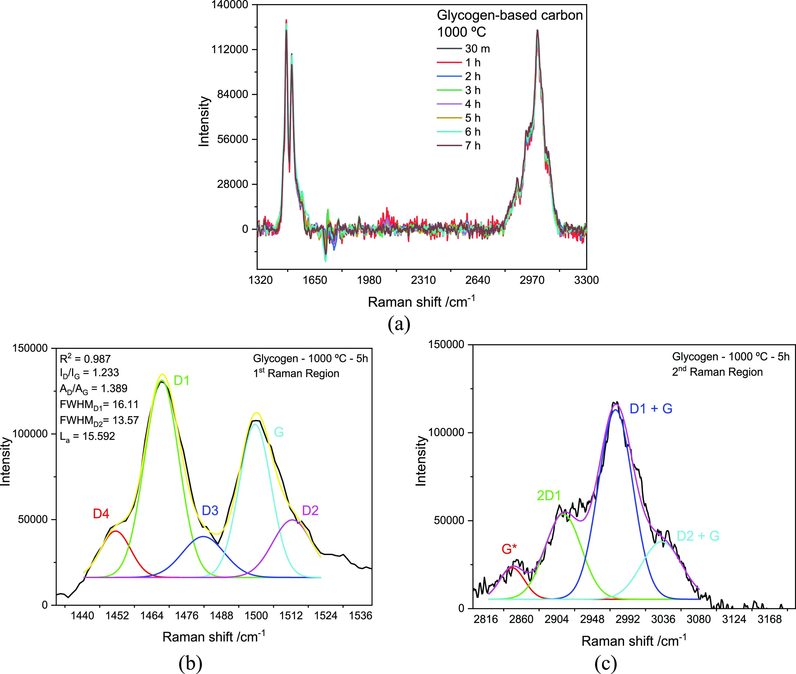
The ID/IG ratio for different times and carbonization temperatures are presented in Tables 2 and S3 (Supporting Information), respectively. The results show a decrease in ID/IG with increased carbonization time, associated with a higher graphitization degree.68 On the other hand, considering the temperature variation, lower carbonization temperatures show higher values of ID/IG. However, that tendency is only verified between 500 and 1000 °C, with 1200 °C showing a significant increase of ID/IG.
| 1000 °C | time/h | ID/IG | La/nm |
|---|---|---|---|
| glycogen-based carbon | 0.5 | 1.567 ± 0.002 | 12.265 |
| 1 | 1.563 ± 0.004 | 12.292 | |
| 2 | 1.554 ± 0.001 | 12.370 | |
| 3 | 1.405 ± 0.001 | 13.682 | |
| 4 | 1.312 ± 0.002 | 14.651 | |
| 5 | 1.233 ± 0.003 | 15.592 | |
| 6 | 1.343 ± 0.005 | 14.319 | |
| 7 | 1.348 ± 0.003 | 14.254 |
Equation S1 allows the crystallite size (La) calculation, with the sample carbonized for 5 h at 1000 °C, presenting the highest value of ∼15.6 nm. The La parameter increases with the increasing of carbonization time, up to 5 h, showing a decrease for longer times (6 and 7 h). The same tendency is observed with increasing temperature from 500 to 1000 °C, showing a decline at 1200 °C.
The change in crystallinity can lead to a change in the physical properties of glycogen-based carbons, with increasing capacitance closely related to the increase in crystallinity.69
Figure 7 shows the XRD patterns of glycogen-based carbons with different carbonization times at a fixed temperature (1000 °C) (Figure 7a) and with different carbonization temperatures at a specified time (1 h) (Figure 7b).
XRD patterns for different (a) carbonization times (30 min up to 7 h at 1000 °C) and (b) temperatures (500 °C up to 1200 °C for 1 h).
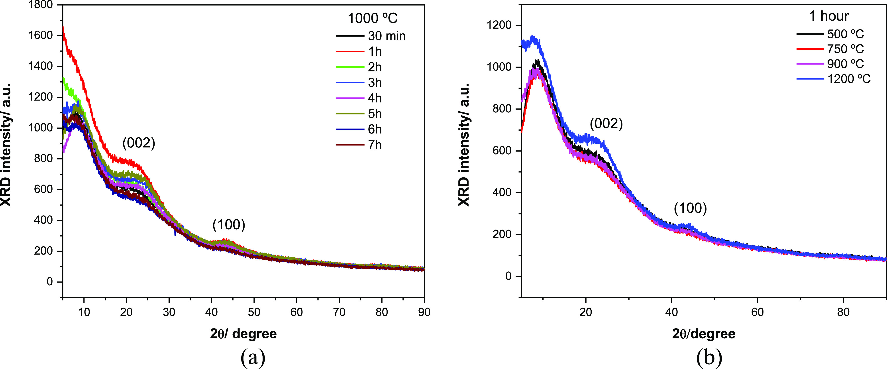
The glycogen-based carbon samples prepared at different times exhibit similar XRD patterns. All the samples are amorphous and characterized by broad reflection peaks at 8, 23, and 43°. It is observed that the peaks at 8 and 23° exhibit a decrease in their intensity as the preparation time is increased from 1 h to 6 h.
The peaks reported at 2θ = 23 and 43° may be correlated with the (002) and (100) planes of graphitic carbon, respectively.70,71 The wide (002) diffraction band shows the presence of parallel-stacked graphene sheets in the interior of carbon materials.33 Additionally, the existence of the (100) plane displays the formation of sp2 hybridized carbon with a honeycomb structure, which can enhance the conductivity of the material,72 affecting the electrochemical performance, which will be presented later.
The glycogen-based carbon samples prepared at different temperatures during the same time exhibit similar XRD patterns. At temperatures above 1000 °C, the broad peaks at 25 and 43° are more evident.
Table S4 presents the peak summary of the diffraction pattern for the glycogen-based carbons carbonized for 1 and 5 h at 1000 °C.
For the glycogen-based carbon carbonized for 5 h at 1000 °C, the (100) band intensity is stronger than that of the glycogen-based carbon carbonized for 1 h at 1000 °C. This means that the glycogen-based carbon obtained under 5 h and 1000 °C carbonization protocol requires a high density of pores inside the solid-state graphitic carbon.73 The inter-layer spacing determined from the (002) plane is 3.8 Å, higher than the 3.35 Å presented for pure graphite.74 The inter-graphene distance varies with the type of carbon source, the synthesis method, and the chemical treatment protocol.75
Therefore, considering the results presented above, it can be advanced that the graphitic carbon nanoflakes have promising features for the supercapacitor applications as electrode material (high crystallinity, conductivity, and porosity).
CV analysis was performed to study the electrochemical performance of the carbon samples within the accessible potential window vs. a silver wire as reference electrode. The cyclic behavior of the glycogen-based carbons is presented in Figure 8, taking into consideration the time of carbonization recorded at 50 mV s–1 (Figure 8a), the scan rate effect of the glycogen-based carbon (5 h, 1000 °C) (Figure 8b), the temperature of carbonization at 50 mV s–1 (Figure 8c1), and the zoom-in image of the carbonized sample at 500 °C is shown in Figure 8c2.
CV curves: (a) glycogen-based carbons at different carbonization times (50 mV s–1), (b) scan rate effect for the glycogen-based carbon sample (5 h, 1000 °C), (c1) glycogen-based carbons at different carbonization temperatures (50 mV s–1), and (c2) zoom-in image of (c1).
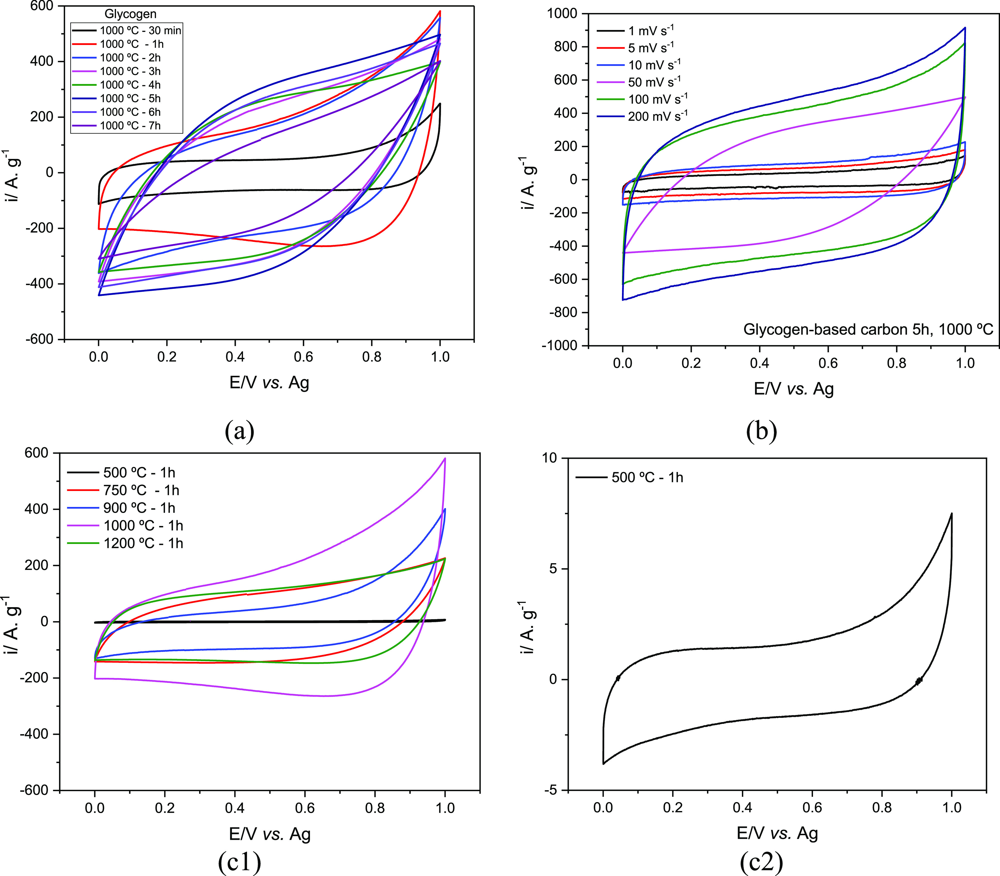
The carbon material electrodes exhibited pseudo-rectangular voltammetric profiles, showing typical electric double-layer capacitive behavior.76 In Figure 8a, it can be observed that there is an increase in the current response, with the increase of the carbonization time reaching a maximum at 5 h. With the best-performing sample, the scan rate effect was studied (Figure 8b), showing that the current response of the carbon electrode increased with increasing scan rate.
Higher electrode capacitive behavior (higher area under the voltammetric curve) was identified at higher scan rates. However, at 50 mV s–1 the quasi-rectangular shape, typical of the capacitive behavior, has significantly decreased, which could be ascribed to constraints related to the availability of the active sites on the working electrode.77,78 Nevertheless, the quasi-rectangular shape maintained at higher scan rates suggests the fast charge–discharge kinetics and good rate capabilities of the glycogen-based carbon.79
The glycogen-based carbons’ electron transport and capacitive properties at different times and carbonization temperatures were studied through electrochemical impedance spectroscopy (EIS) analysis at a frequency range of 20 kHz–0.1 Hz, at a fixed potential of 0.5 V vs. Ag. The different carbons were coated on the bare GC electrode, and tested using ethaline as the electrolyte.
The impedance response of the prepared electrochemical cell with the glycogen-based carbon (5 h at 1000 °C) as electrode is presented in Figure 9. All samples subjected to EIS analysis showed a similar impedance response as illustrated in Figure 9.
Impedance response in Nyquist format and its fit according to the equivalent circuit presented in Scheme S1 for glycogen-based carbon (5 h, 1000 °C).
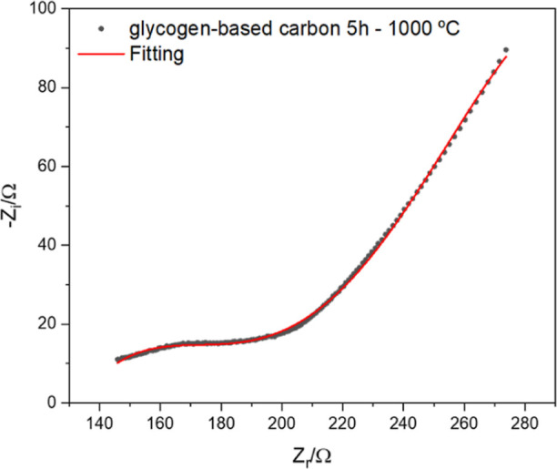
EIS spectra presented in Figure 9 reveal a depressed semi-circle in the high-frequency area observed as a straight line in the low-frequency zone, suggesting a linear diffusion of charged ions occurring throughout the pores of the electrodes. This circuit is defined with a constant phase element (CPE) loop and Warburg diffusion (WD) impedance in an equivalent circuit model, shown in eq S3 and Scheme S1.
The Ohmic resistance for all the systems present very similar results, as presented in Table S5, since the electrolyte is the same in all the systems. Comparing the charge-transfer resistances, Rt’s, it is visible that the glycogen-based carbon (treated for 5 h at 1000 °C) has a superior resistance value for the electrochemical reaction, and the CPE coefficient, Q, is higher as well, implying a higher capacitive effect is occurring on the electrode system. The higher value of Q suggests that the electrode can also adsorb more ions on the electrode’s surface. All the equations associated with these calculations are presented in the Supporting Information (eqs S3–S5).
Balogun and Fayemi80 recently published the effect of several electrolytes on the EIS properties of nickel phthalocyanine multiwalled carbon nanotube nanocomposite on a GC electrode. The authors presented that a decrease in the Rt parameter indicates fast electron transfer associated with increased capacitance. Fu et al.(81) presented a porous carbon material derived from the crab shell, presenting a similar Nyquist plot, with a Warburg region, containing a semi-circle with a small diameter, representing a low interfacial Rt, indicating good electrical conductivity,82 which is beneficial for the capacitive performance. Cai et al.,83 also presented a carbon/TiO2 micro-supercapacitor, in which a similar Nyquist plot was observed, with a Warburg region, with excellent capacitive behavior. With the help of these authors, it is possible to conclude that the materials studied in this work present excellent characteristics for application in supercapacitors.
The CPE exponential factor, α, is a parameter of the surface roughness of the electrode. It typically presents a value between 0.5 and 1, and if its value is near 1, it suggests that the roughness decreases and the current is well dispersed on the surface.84
Considering the α values, it is evident that the electrode made from glycogen-based carbon (prepared at 1000 °C for 5 h) presents the most porous structure. The result obtained is in good agreement with the SEM and BET analyses. Furthermore, the current distribution varies among various locations on the electrode surfaces that are distributed more homogeneously on glycogen-based carbon (1 h, 1200 °C) electrodes due to their value being closer to 1. It is also observed that WD (which is related to the diffusion of the electrolyte in the electrode material) of the glycogen-based carbon (5 h/6 h/7 h, 1000 °C) electrodes are the highest, implying that the impedance is less controlled by mass transfer than the rest of the materials.
The GCD curves for the glycogen-based carbons at different carbonization times and temperatures are presented in Figure 10a,b(1),b(2).
GCD curves in ethaline at 30 °C (1st cycle): (a) glycogen-based carbons at different carbonization times (1 A g–1), (b1) glycogen-based carbons at different carbonization temperatures (1 A g–1), and (b2) zoom-in image of (b1).
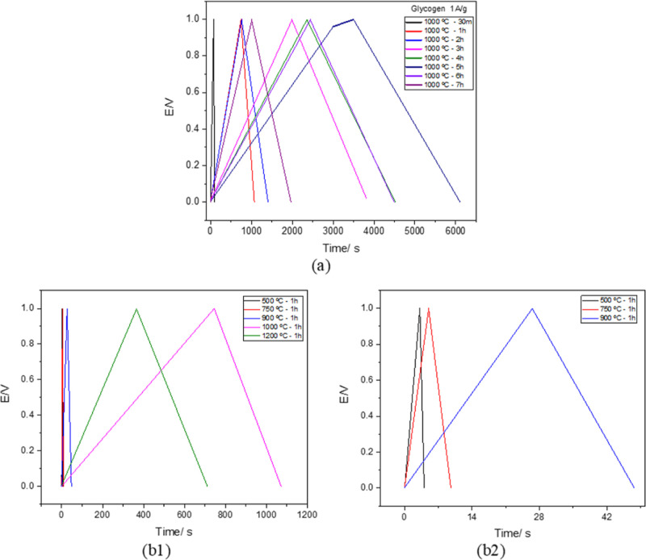
The symmetrical triangle shape of the curves demonstrated the electric double-layer capacitor behavior and excellent reversibility of the carbon electrodes.85 The glycogen-based carbon produced at 1000 °C, with a 5 h preparation time, has a distinct plateau in the charge region, indicating the Faradaic nature of this carbon material.86 This was expected due to the higher nitrogen-containing groups of this sample, endorsed by the results of surface composition and functional group analyses,78 also observed earlier in the XPS analysis.
Table 3 presents the specific capacitance (calculated through eq S2) and the capacitance retention after 1000 cycles of different glycogen-based carbon samples, with other times and temperatures of carbonization. The higher specific capacitance was obtained for the glycogen-based carbon for 5 h at 1000 °C at a current density of 1 A g–1.
| carbonization parameters | electrochemistry 30 °C ethaline, 1 A g–1 | |||
|---|---|---|---|---|
| temperature/°C | time/h | C (F g–1) 1st cycle | % retention after 1000th cycle | |
| glycogen-based carbons | 1000 | 0.5 | 3.4 ± 0.8 | 91 ± 3 |
| 1 | 98 ± 2 | 99 ± 1 | ||
| 2 | 109 ± 3 | 99 ± 1 | ||
| 3 | 387 ± 3 | 99 ± 1 | ||
| 4 | 421 ± 2 | 99 ± 1 | ||
| 5 | 657 ± 3 | 100 ± 2 | ||
| 6 | 452 ± 4 | 100 ± 2 | ||
| 7 | 225 ± 2 | 98 ± 1 | ||
| 500 | 1 | 4 ± 2 | 88 ± 1 | |
| 750 | 15 ± 4 | 92 ± 2 | ||
| 900 | 32 ± 4 | 97 ± 2 | ||
| 1200 | 69 ± 6 | 96 ± 3 | ||
The higher specific capacitance value can be associated with the higher specific surface area of 1526 m2 g–1 and micropore volume of 0.377 cm3 g–1, allowing contact of more Cl– ions from the eutectic electrolyte with the pores, as previously stated by Brandão et al.(87) The higher specific capacitance was probably originated as a consequence of the enhanced surface properties (elemental composition and functional groups).
To better understand the many characteristics analyzed in this paper, Figure S3 was elaborated to better display the effect of the carbonization time on five studied parameters: SBET, specific capacitance, Vmicro, ID/IG, and N 1s (at%).
The analysis of Figure S3a,b clearly shows that an optimal point can be found at a carbonization time at 5 h, where the capacitance, the surface area, and the nitrogen content present the highest values, followed by the ID/IG presenting its lowest value. All these parameters are associated with the highest value of specific capacitance.
To accomplish a practical application of the glycogen-based carbon electrodes, a prototype of a symmetric supercapacitor cell was assembled, and the electrochemical performance was studied using an SSE based on ethaline. The thickness of the SSE@DES was 2.1 mm, and the electrode’s mass was ∼0.0121 g.
Figure 11 presents the preliminary results regarding the application of these materials in symmetric supercapacitors, using an SSE instead of a liquid electrolyte for the assembly of the cell. Figure 11a shows the images of the symmetric supercapacitor prototype and the 10 V LED light-based circuit assembly pre-charged by a 12 V battery. The video of the battery-SSE-LED prototype is presented in the Supporting Information. The video shows the prototype being charged for 3 min and then disconnected through a switch from the power source, which was able to power the LED light for almost 51 s. This experiment demonstrates that glycogen-based carbon materials can be an excellent resource for developing suitable conducting electrodes for application in supercapacitors.
Electrochemical performance of a symmetric ethaline-based SSE/carbon cell at room temperature: (a) representation of the cell and prototype; (b) CV curves at various scan rates from 20 to 200 mV s–1; (c) Nyquist plot before and after cycling (at a frequency range of 20 kHz–0.1 Hz, at a fixed potential of 0.5 V vs Ag); (d) charge–discharge curves at 10 A g–1 for the first 8 cycles; (e) gravimetric capacitance of the symmetric device at various current densities (0.1 A g–1 to 10 A g–1); (f) Ragone plot (E vs P); and (g) ratio of power density/energy density at various current densities.
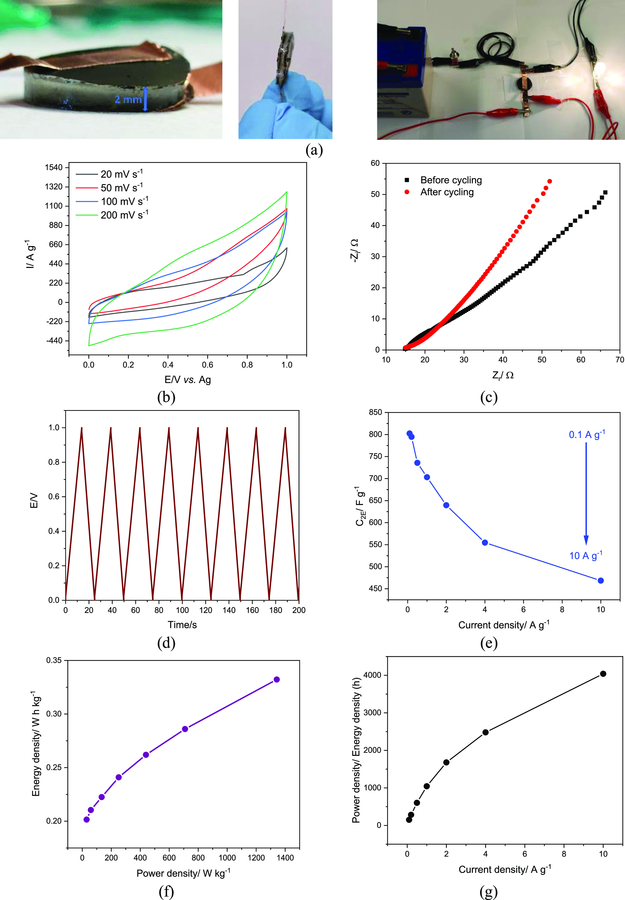
Figure 11b illustrates the CV curves at different scan rates (20–200 mV s–1). The quasi-rectangular shape of all four curves indicates an EDLC behavior, as previously observed in the half-cell setup.
Figure 11c shows the Nyquist plots before and after 1000 cycles. It is possible to observe that a sloping line in the low-frequency domain and a semi-circle in the high-frequency domain are obtained before cycling. After cycling, the semi-circle is not so well defined. Applying the equivalent circuit model presented in Scheme S1, the fitted data shows a higher resistance (298 to 412 Ω) after cycling. This can be attributed to the electrode structural changes.
The GCD curves of the assembled supercapacitor prototype, between 0.1 and 10 A g–1, are presented in Figure 11d. The perfect triangular shape is evident, indicating good EDLC behavior, which echoes the results of CV analysis.
The gravimetric capacitances of the symmetric supercapacitor prototype were calculated using eq S6, considering the discharge time of the charge–discharge curves. The gravimetric capacitance for different current densities is presented in Figure 11e, showing a consistent decline with increasing current density from 0.01 to 10 A g–1 (802 F g–1 to 468 F g–1, respectively). In this supercapacitor prototype, the specific capacitance and capacitance retention at 1 A g–1 was 703 F g–1 and it remained 75% after 1000 cycles.
Ragone plot for different studied current densities is presented in Figure 11f. An energy density (eq S7) of 0.24 W h kg–1 can be achieved at a current density of 1 A g–1. Furthermore, the power density (eq S8) was as high as 1342 W kg–1 at 10 A g–1, while the energy density was 0.33 W h kg–1. Figure 11g presents the power density/energy density ratio at different current densities, showing an increase in the ratio with the increase of the current density.
The comparison of the specific capacitance and the capacitance retention of this prototype and the half-cell study shows that even though the SSE@DES/carbon prototype presents a higher value of specific capacitance, it loses up to 25% retention ability after 1000 cycles. This indicates that the supercapacitor prototype still needs to be improved: the thickness of the SSE needs to be optimized to decrease the resistance and further increase the capacitance. The loss of capacitance with cycling is an issue that also needs to be addressed and improved for further application in energy storage devices.
Analogous results have been found in the literature. Other marine wastes have been used as precursors to obtain carbon materials for supercapacitors, as presented in Table S6, for easier comparison.
According to the literature, it is possible to obtain excellent outcomes from the waste that comes from the fish industry, as shown in the works of Liu et al.(46) and Chen et al.(88) They developed mesoporous carbon structures from crab shells and fish scales, respectively.
The parameters of each step were designed to boost the surface area and enhance the electrochemical performance, as stated in Table S6.
The outstanding electrochemical performance of fish waste-derived carbon materials in supercapacitors comes from the best possible combination of porosity, surface functionality, and conductivity.89 Gao et al.(16) analyzed various carbonization and activation processes at different temperatures to get nitrogen-doped activated carbon materials from prawn shells with application in high-performance supercapacitors, discovering that the specific capacitance was around 280 F g–1. Wang et al.(34) also achieved a high capacitance value (306 F g–1) with nitrogen/oxygen/sulfur-doped activated carbon materials with 100% capacitance retention at 1000 cycles. These excellent results regarding the capacitance and capacitance retention may be due to the ideal arrangement of an electric double-layer capacitance and pseudocapacitance resulting from a high specific surface area and a moderate amount of N in the samples.
A facile and sustainable strategy was proposed and optimized to prepare porous carbon materials from glycogen originating from seafood waste. The porous carbon material was obtained by controlling different parameters, such as carbonization time and temperature.
This work shows that the glycogen-based carbons from seafood waste, prepared in an easy and sustainable way, without further activation, present higher capacitance and surface area values compared to similar materials described in the literature, and can successfully be applied as electrode materials for high-performance supercapacitor applications.
The glycogen-based carbon material, with a carbonization time and temperature respectively of 5 h and 1000 °C, presents naturally doped nitrogen atoms and a SBET surface area of 1526 m2 g–1, delivering a specific capacitance of 657 F g–1 at 1 A g–1 current density (half-cell setup), along with an extraordinary capacitance retention of 99% at 1000 continuous charge–discharge cycle which makes this carbon material suitable for practical applications. The upscale to a symmetric supercapacitor prototype, using an SSE, allowed to achieve promising results for developing this electrochemical system. A symmetric SSE@DES/carbon cell was assembled, delivering a capacitance of 703 F g–1, with a 75% capacitance retention over 1000 cycles. In both cases (half-cell and full-cell setups), excellent electrochemical performance was obtained, which can be attributed to the well-distributed carbon structure that acts as a reservoir for the electrolyte and provides an ion-transfer network.
This work was financially supported by the FCT under Research Grants UIDB/00081/2020–CIQUP, LA/P/0056/2020 (IMS), and H2Innovate NORTE-01-0145-FEDER-000076. This work was supported by the Romanian Ministry of Research, Innovation and Digitalization, Romania, under JINR-RO Project no. 91 Code Theme 04–4–1133–2018/2023, grant no. 37/2021, and ECSEL-H2020 projects: PIn3S Contract no. 10/1.1.3H/03.04.2020 Code MySMIS 135127 and BEYOND5 Contract no. 12/1.1.3H/31.07.2020 Code MySMIS 136877. J.A.V. and J.V. thank Xunta de Galicia (Grupos de Potential Crecimiento, IN607B 2021/11) for financial support and Javier Fraguas for his technical contribution. A.T.S.C.B. thanks the scholarship awarded by FCT with reference No. 2021.04783.BD and the Schwäbisch Gmünd Scientific Exchange Grant awarded by the European Academy of Surface Technology. R.C. thanks FCT for funding through the program DL 57/2016–Norma transitória (SFRH/BPD/89752/2012).
The Supporting Information is available free of charge at https://pubs.acs.org/doi/10.1021/acsomega.3c00816.
The manuscript was written through contributions of all authors. All authors have approved the final version of the manuscript. Conceptualization: A.T.S.C.B., C.M.P., and J.A.V.; methodology: A.T.S.C.B. and C.M.P.; formal analysis: A.T.S.C.B. and C.M.P.; investigation: A.T.S.C.B., R.C., S.R., P.P., J.A.V., J.V., and C.M.P.; writing—original draft: A.T.S.C.B.; writing—review and editing: A.T.S.C.B., S.R., R.C., L.A., M.E., and C.M.P.; supervision: A.F.S., L.A., M.E., and C.M.P.; resources: M.E. and C.M.P.; funding acquisition: C.M.P.
The authors declare no competing financial interest.
ao3c00816_si_001.pdf
ao3c00816_si_002.mp4
AL Shaqsi A. Z.; Sopian K.; Al-Hinai A. Review of Energy Storage Services, Applications, Limitations, and Benefits. Energy Rep. 2020, 6, 288–306. 10.1016/j.egyr.2020.07.028.
Selvanathan V.; Azzahari A. D.; Abd Halim A. A.; Yahya R. Ternary Natural Deep Eutectic Solvent (NADES) Infused Phthaloyl Starch as Cost Efficient Quasi-Solid Gel Polymer Electrolyte. Carbohydr. Polym. 2017, 167, 210–218. 10.1016/j.carbpol.2017.03.023.
Lu X.; Yu M.; Wang G.; Tong Y.; Li Y. Flexible Solid-State Supercapacitors: Design, Fabrication and Applications. Energy Environ. Sci. 2014, 7, 2160–2181. 10.1039/C4EE00960F.
Paul R.; Vincent M.; Etacheri V.; Roy A. K.. Carbon Nanotubes, Graphene, Porous Carbon, and Hybrid Carbon-Based Materials: Synthesis, Properties, and Functionalization for Efficient Energy Storage. In Micro and Nano Technologies; Paul R., Etacheri V., Wang Y., Linfor C.-T. B. T.-C. B. N. A. T. E. E. S. C., Eds.; Elsevier, 2019; pp 1–24, Chapter 1.
Sun C. F.; Meany B.; Wang Y. H.. Characteristics and Applications of Carbon Nanotubes with Different Numbers of Walls, 2nd ed.; Elsevier Ltd, 2014.
Jin H.; Wang X.; Gu Z.; Polin J. Carbon Materials from High Ash Biochar for Supercapacitor and Improvement of Capacitance with HNO3 Surface Oxidation. J. Power Sources 2013, 236, 285–292. 10.1016/j.jpowsour.2013.02.088.
Zhang W.; Zhao M.; Liu R.; Wang X.; Lin H. Hierarchical Porous Carbon Derived from Lignin for High Performance Supercapacitor. Colloids Surfaces A Physicochem. Eng. Asp. 2015, 484, 518–527. 10.1016/j.colsurfa.2015.08.030.
Wang R.; Wang P.; Yan X.; Lang J.; Peng C.; Xue Q. Promising Porous Carbon Derived from Celtuce Leaves with Outstanding Supercapacitance and CO2 Capture Performance. ACS Appl. Mater. Interfaces 2012, 4, 5800–5806. 10.1021/am302077c.
Thangavel R.; Kaliyappan K.; Ramasamy H. V.; Sun X.; Lee Y.-S. Engineering the Pores of Biomass-Derived Carbon: Insights for Achieving Ultrahigh Stability at High Power in High-Energy Supercapacitors. ChemSusChem 2017, 10, 2805–2815. 10.1002/cssc.201700492.
Karbak M.; Boujibar O.; Lahmar S.; Autret-Lambert C.; Chafik T.; Ghamouss F. Chemical Production of Graphene Oxide with High Surface Energy for Supercapacitor Applications. C 2022, 8, 27. 10.3390/c8020027.
Anshori I.; Kepakisan K. A. A.; Nuraviana Rizalputri L.; Rona Althof R.; Nugroho A. E.; Siburian R.; Handayani M. Facile Synthesis of Graphene Oxide/Fe3O4 Nanocomposite for Electrochemical Sensing on Determination of Dopamine. Nanocomposites 2022, 8, 155–166. 10.1080/20550324.2022.2090050.
Okhay O.; Tkach A. Graphene/Reduced Graphene Oxide-Carbon Nanotubes Composite Electrodes: From Capacitive to Battery-Type Behaviour. Nanomaterials 2021, 11, 1240. 10.3390/nano11051240.
Gerasimenko A. Y.; Kuksin A. V.; Shaman Y. P.; Kitsyuk E. P.; Fedorova Y. O.; Murashko D. T.; Shamanaev A. A.; Eganova E. M.; Sysa A. V.; Savelyev M. S.; et al. Hybrid Carbon Nanotubes–Graphene Nanostructures: Modeling, Formation, Characterization. Nanomaterials 2022, 12, 2812. 10.3390/nano12162812.
Wang C.; Yang Y.; Li R.; Wu D.; Qin Y.; Kong Y. Polyaniline Functionalized Reduced Graphene Oxide/Carbon Nanotube Ternary Nanocomposite as a Supercapacitor Electrode. Chem. Commun. 2020, 56, 4003–4006. 10.1039/D0CC01028F.
Rouhi N.; Akhgari A.; Orouji N.; Nezami A.; Rahimzadegan M.; Kamali H. Recent Progress in the Graphene-Based Biosensing Approaches for the Detection of Alzheimer’s Biomarkers. J. Pharm. Biomed. Anal. 2023, 222, 115084. 10.1016/j.jpba.2022.115084.
Gao F.; Qu J.; Zhao Z.; Wang Z.; Qiu J. Nitrogen-Doped Activated Carbon Derived from Prawn Shells for High-Performance Supercapacitors. Electrochim. Acta 2016, 190, 1134–1141. 10.1016/j.electacta.2016.01.005.
Paneque M.; De la Rosa J. M.; Kern J.; Reza M. T.; Knicker H. Hydrothermal Carbonization and Pyrolysis of Sewage Sludges: What Happen to Carbon and Nitrogen?. J. Anal. Appl. Pyrolysis 2017, 128, 314–323. 10.1016/j.jaap.2017.09.019.
Thirumal V.; Yuvakkumar R.; Ravi G.; Dineshkumar G.; Ganesan M.; Alotaibi S. H.; Velauthapillai D. Characterization of Activated Biomass Carbon from Tea Leaf for Supercapacitor Applications. Chemosphere 2022, 291, 132931. 10.1016/j.chemosphere.2021.132931.
Kanjana K.; Harding P.; Kwamman T.; Kingkam W.; Chutimasakul T. Biomass-Derived Activated Carbons with Extremely Narrow Pore Size Distribution via Eco-Friendly Synthesis for Supercapacitor Application. Biomass Bioenergy 2021, 153, 106206. 10.1016/j.biombioe.2021.106206.
Li X.; Liu K.; Liu Z.; Wang Z.; Li B.; Zhang D. Hierarchical Porous Carbon from Hazardous Waste Oily Sludge for All-Solid-State Flexible Supercapacitor. Electrochim. Acta 2017, 240, 43–52. 10.1016/j.electacta.2017.04.061.
Karaman C.; Karaman O.; Atar N.; Yola M. L. Sustainable Electrode Material for High-Energy Supercapacitor: Biomass-Derived Graphene-like Porous Carbon with Three-Dimensional Hierarchically Ordered Ion Highways. Phys. Chem. Chem. Phys. 2021, 23, 12807–12821. 10.1039/d1cp01726h.
Zhang L.; Xu L.; Zhang Y.; Zhou X.; Zhang L.; Yasin A.; Wang L.; Zhi K. Facile Synthesis of Bio-Based Nitrogen- and Oxygen-Doped Porous Carbon Derived from Cotton for Supercapacitors. RSC Adv. 2018, 8, 3869–3877. 10.1039/c7ra11475c.
Shaker M.; Ghazvini A. A. S.; Cao W. Q.; Riahifar R.; Ge Q. Biomass-Derived Porous Carbons as Supercapacitor Electrodes-A Review. Xinxing Tan Cailiao/New Carbon Mater 2021, 36, 546–572. 10.1016/S1872-5805(21)60038-0.
Maniscalco M. P.; Volpe M.; Messineo A. Hydrothermal Carbonization as a Valuable Tool for Energy and Environmental Applications: A Review. Energies 2020, 13, 4098. 10.3390/en13164098.
Shanmuga Priya M.; Divya P.; Rajalakshmi R. A Review Status on Characterization and Electrochemical Behaviour of Biomass Derived Carbon Materials for Energy Storage Supercapacitors. Sustain. Chem. Pharm. 2020, 16, 100243. 10.1016/j.scp.2020.100243.
Berktas I.; Hezarkhani M.; Haghighi Poudeh L.; Saner Okan B. Recent Developments in the Synthesis of Graphene and Graphene-like Structures from Waste Sources by Recycling and Upcycling Technologies: A Review. Graphene Technol. 2020, 5, 59–73. 10.1007/s41127-020-00033-1.
Kamal A. S.; Othman R.; Jabarullah N. H. Preparation and Synthesis of Synthetic Graphite from Biomass Waste: A Review. Syst. Rev. Pharm. 2020, 11, 881–894.
Elisadiki J.; Kibona T. E.; Machunda R. L.; Saleem M. W.; Kim W.; Jande Y. A. C.; Kim W. Biomass-based carbon electrode materials for capacitive deionization: a review. A Review 2020, 10, 1327–1356. 10.1007/s13399-019-00463-9.
Lionetto F.; Bagheri S.; Mele C. Sustainable Materials from Fish Industry Waste for Electrochemical Energy Systems. Energies 2021, 14, 7928. 10.3390/en14237928.
Liu M.; Niu J.; Zhang Z.; Dou M.; Wang F. Potassium Compound-Assistant Synthesis of Multi-Heteroatom Doped Ultrathin Porous Carbon Nanosheets for High Performance Supercapacitors. Nano Energy 2018, 51, 366–372. 10.1016/j.nanoen.2018.06.037.
Raj C. J.; Rajesh M.; Manikandan R.; Yu K. H.; Anusha J. R.; Ahn J. H.; Kim D.-W.; Park S. Y.; Kim B. C. High Electrochemical Capacitor Performance of Oxygen and Nitrogen Enriched Activated Carbon Derived from the Pyrolysis and Activation of Squid Gladius Chitin. J. Power Sources 2018, 386, 66–76. 10.1016/j.jpowsour.2018.03.038.
Shan B.; Cui Y.; Liu W.; Zhang Y.; Liu S.; Wang H.; Sun L.; Wang Z.; Wu R. Fibrous Bio-Carbon Foams: A New Material for Lithium-Ion Hybrid Supercapacitors with Ultrahigh Integrated Energy/Power Density and Ultralong Cycle Life. ACS Sustain. Chem. Eng. 2018, 6, 14989–15000. 10.1021/acssuschemeng.8b03473.
Tian W.; Gao Q.; Tan Y.; Li Z. Unusual Interconnected Graphitized Carbon Nanosheets as the Electrode of High-Rate Ionic Liquid-Based Supercapacitor. Carbon N. Y. 2017, 119, 287–295. 10.1016/j.carbon.2017.04.050.
Wang J.; Shen L.; Xu Y.; Dou H.; Zhang X. Lamellar-Structured Biomass-Derived Phosphorus- and Nitrogen-Co-Doped Porous Carbon for High-Performance Supercapacitors. New J. Chem. 2015, 39, 9497–9503. 10.1039/C5NJ02080H.
Kwak C. H.; Kim D.; Bai B. C. Correlation of EDLC Capacitance with Physical Properties of Polyethylene Terephthalate Added Pitch-Based Activated Carbon. Molecules 2022, 27, 1454. 10.3390/molecules27041454.
Brandão A. T. S. C.; Costa R.; Silva A. F.; Pereira C. M. Sustainable Preparation of Nanoporous Carbons via Dry Ball Milling: Electrochemical Studies Using Nanocarbon Composite Electrodes and a Deep Eutectic Solvent as Electrolyte. Nanomaterials 2021, 11, 3258. 10.3390/nano11123258.
Venugopal V. Valorization of Seafood Processing Discards: Bioconversion and Bio-Refinery Approaches. Front. Sustain. Food Syst. 2021, 5, 611835. 10.3389/fsufs.2021.611835.
Prieto M. A.; Prieto I.; Vázquez J. A.; Ferreira I. C. F. R. An Environmental Management Industrial Solution for the Treatment and Reuse of Mussel Wastewaters. Sci. Total Environ. 2015, 538, 117–128. 10.1016/j.scitotenv.2015.07.041.
Amado I. R.; Vázquez J. A. Mussel Processing Wastewater: A Low-Cost Substrate for the Production of Astaxanthin by Xanthophyllomyces Dendrorhous. Microb. Cell Fact. 2015, 14, 177. 10.1186/s12934-015-0375-5.
Murado M. A.; Gonzalez M. P.; Pastrana L.; Siso M. I. G.; Miron J.; Montemayor M. I. Enhancement of the Bioproduction Potential of an Amylaceous Effluent. Bioresour. Technol. 1993, 44, 155–163. 10.1016/0960-8524(93)90190-M.
Torrado A.; Vázquez J.-A.; Prieto M.-Á.; Fuciños P.; Montemayor M.-I.; Pastrana L.; González M.-P.; Murado M.-Á. Amylase Production by Aspergillus Oryzae in a Solid-State Bioreactor with Fed-Batch Operation Using Mussel Processing Wastewaters as Feeding Medium. J. Chem. Technol. Biotechnol. 2013, 88, 226–236. 10.1002/jctb.3813.
Sotelo C. G.; Blanco M.; Ramos P.; Vázquez J. A.; Perez-Martin R. I. Sustainable Sources from Aquatic Organisms for Cosmeceuticals Ingredients. Cosmetics 2021, 8, 48. 10.3390/cosmetics8020048.
Kasturi P. R.; Ramasamy H.; Meyrick D.; Sung Lee Y.; Kalai Selvan R. Preparation of Starch-Based Porous Carbon Electrode and Biopolymer Electrolyte for All Solid-State Electric Double Layer Capacitor. J. Colloid Interface Sci. 2019, 554, 142–156. 10.1016/j.jcis.2019.06.081.
Pang L.; Zou B.; Zou Y.; Han X.; Cao L.; Wang W.; Guo Y. A New Route for the Fabrication of Corn Starch-Based Porous Carbon as Electrochemical Supercapacitor Electrode Material. Colloids Surfaces A Physicochem. Eng. Asp. 2016, 504, 26–33. 10.1016/j.colsurfa.2016.05.049.
Tian W.; Gao Q.; Tan Y.; Li Z. Unusual Interconnected Graphitized Carbon Nanosheets as the Electrode of High-Rate Ionic Liquid-Based Supercapacitor. Carbon N. Y. 2017, 119, 287–295. 10.1016/j.carbon.2017.04.050.
Liu H.-J.; Wang X.-M.; Cui W.-J.; Dou Y.-Q.; Zhao D.-Y.; Xia Y.-Y. Highly Ordered Mesoporous Carbon Nanofiber Arrays from a Crab Shell Biological Template and Its Application in Supercapacitors and Fuel Cells. J. Mater. Chem. 2010, 20, 4223–4230. 10.1039/B925776D.
Chen W.; Zhang H.; Huang Y.; Wang W. A Fish Scale Based Hierarchical Lamellar Porous Carbon Material Obtained Using a Natural Template for High Performance Electrochemical Capacitors. J. Mater. Chem. 2010, 20, 4773–4775. 10.1039/c0jm00382d.
Laheäär A.; Arenillas A.; Béguin F. Change of Self-Discharge Mechanism as a Fast Tool for Estimating Long-Term Stability of Ionic Liquid Based Supercapacitors. J. Power Sources 2018, 396, 220–229. 10.1016/j.jpowsour.2018.06.009.
Tuhania P.; Singh P. K.; Bhattacharya B.; Dhapola P. S.; Yadav S.; Shukla P.; Gupta M. PVDF-HFP and 1-Ethyl-3-Methylimidazolium Thiocyanate – Doped Polymer Electrolyte for Efficient Supercapacitors. High Performance Polymers 2018, 30, 911–917. 10.1177/0954008318772009.
Abbott A. P.; Capper G.; Davies D. L.; Munro H. L.; Rasheed R. K.; Tambyrajah V. Preparation of Novel, Moisture-Stable, Lewis-Acidic Ionic Liquids Containing Quaternary Ammonium Salts with Functional Side Chains. Chem. Commun. 2001, 19, 2010–2011. 10.1039/B106357J.
Abbott A. P.; Ballantyne A.; Harris R. C.; Juma J. A.; Ryder K. S.; Forrest G. A Comparative Study of Nickel Electrodeposition Using Deep Eutectic Solvents and Aqueous Solutions. Electrochim. Acta 2015, 176, 718–726. 10.1016/j.electacta.2015.07.051.
Abbott A.; Aldous L.; Borisenko N.; Coles S.; Fontaine O.; Gamarra Garcia J. D.; Gardas R.; Hammond O.; Hardwick L. J.; Haumesser P. H.; et al. Electrochemistry: General Discussion. Faraday Discuss. 2018, 206, 405–426. 10.1039/c7fd90093g.
Brandão A. T. S. C.; Rosoiu S.; Costa R.; Silva A. F.; Anicai L.; Enachescu M.; Pereira C. M. Characterization of Carbon Nanomaterials Dispersions: Can Metal Decoration of MWCNTs Improve Their Physicochemical Properties?. Nanomaterials 2021, 12, 99. 10.3390/nano12010099.
Brandão A. T. S. C.; Rosoiu S.; Costa R.; Lazar O. A.; Silva A. F.; Anicai L.; Pereira C. M.; Enachescu M. Characterization and Electrochemical Studies of MWCNTs Decorated with Ag Nanoparticles through Pulse Reversed Current Electrodeposition Using a Deep Eutectic Solvent for Energy Storage Applications. J. Mater. Res. Technol. 2021, 15, 342–359. 10.1016/j.jmrt.2021.08.031.
Örkün Y.; Karatepe N.; Yavuz R. Influence of Temperature and Impregnation Ratio of H3PO 4 on the Production of Activated Carbon from Hazelnut Shell. Acta Phys. Pol., A 2012, 121, 277–280. 10.12693/APhysPolA.121.277.
Cazetta A. L.; Pezoti O.; Bedin K. C.; Silva T. L.; Paesano Junior A.; Asefa T.; Almeida V. C. Magnetic Activated Carbon Derived from Biomass Waste by Concurrent Synthesis: Efficient Adsorbent for Toxic Dyes. ACS Sustain. Chem. Eng. 2016, 4, 1058–1068. 10.1021/acssuschemeng.5b01141.
Rodríguez-Sánchez S.; Ruiz B.; Martínez-Blanco D.; Sánchez-Arenillas M.; Diez M. A.; Suárez-Ruiz I.; Marco J. F.; Blanco J.; Fuente E. Sustainable Thermochemical Single-Step Process to Obtain Magnetic Activated Carbons from Chestnut Industrial Wastes. ACS Sustain. Chem. Eng. 2019, 7, 17293–17305. 10.1021/acssuschemeng.9b04141.
Ozpinar P.; Dogan C.; Demiral H.; Morali U.; Erol S.; Samdan C.; Yildiz D.; Demiral I. Activated Carbons Prepared from Hazelnut Shell Waste by Phosphoric Acid Activation for Supercapacitor Electrode Applications and Comprehensive Electrochemical Analysis. Renewable Energy 2022, 189, 535–548. 10.1016/j.renene.2022.02.126.
Barroso-Bogeat A.; Alexandre-Franco M.; Fernández-González C.; Macías-García A.; Gómez-Serrano V. Preparation of Activated Carbon-SnO2, TiO2, and WO3 Catalysts. Study by FT-IR Spectroscopy. Ind. Eng. Chem. Res. 2016, 55, 5200–5206. 10.1021/acs.iecr.5b04563.
Al Bahri M.; Calvo L.; Gilarranz M. A.; Rodriguez J. J. Activated Carbon from Grape Seeds upon Chemical Activation with Phosphoric Acid: Application to the Adsorption of Diuron from Water. Chem. Eng. J. 2012, 203, 348–356. 10.1016/j.cej.2012.07.053.
Xu J.; Chen L.; Qu H.; Jiao Y.; Xie J.; Xing G. Preparation and Characterization of Activated Carbon from Reedy Grass Leaves by Chemical Activation with H 3 PO 4. Appl. Surf. Sci. 2014, 320, 674–680. 10.1016/j.apsusc.2014.08.178.
Luo Y.; Li D.; Chen Y.; Sun X.; Cao Q.; Liu X. The Performance of Phosphoric Acid in the Preparation of Activated Carbon-Containing Phosphorus Species from Rice Husk Residue. J. Mater. Sci. 2019, 54, 5008–5021. 10.1007/s10853-018-03220-x.
Sankar S.; Ahmed A. T. A.; Inamdar A. I.; Im H.; Im Y. B.; Lee Y.; Kim D. Y.; Lee S. Biomass-Derived Ultrathin Mesoporous Graphitic Carbon Nanoflakes as Stable Electrode Material for High-Performance Supercapacitors. Mater. Des. 2019, 169, 107688. 10.1016/j.matdes.2019.107688.
Zhang X. F.; Wang B.; Yu J.; Wu X. N.; Zang Y. H.; Gao H. C.; Su P. C.; Hao S. Q. Three-Dimensional Honeycomb-like Porous Carbon Derived from Corncob for the Removal of Heavy Metals from Water by Capacitive Deionization. RSC Adv. 2018, 8, 1159–1167. 10.1039/c7ra10689k.
Yu M.; Han Y.; Li J.; Wang L. Magnetic N-Doped Carbon Aerogel from Sodium Carboxymethyl Cellulose/Collagen Composite Aerogel for Dye Adsorption and Electrochemical Supercapacitor. Int. J. Biol. Macromol. 2018, 115, 185–193. 10.1016/j.ijbiomac.2018.04.012.
Zhang S.; Su Y.; Zhu S.; Zhang H.; Zhang Q. Effects of Pretreatment and FeCl3 Preload of Rice Husk on Synthesis of Magnetic Carbon Composites by Pyrolysis for Supercapacitor Application. J. Anal. Appl. Pyrolysis 2018, 135, 22–31. 10.1016/j.jaap.2018.09.026.
Rodríguez-Sánchez S.; Ruiz B.; Martínez-Blanco D.; Sánchez-Arenillas M.; Diez M. A.; Marco J. F.; Gorria P.; Fuente E. Towards Advanced Industrial Waste-Based Magnetic Activated Carbons with Tunable Chemical, Textural and Magnetic Properties. Appl. Surf. Sci. 2021, 551, 149407. 10.1016/j.apsusc.2021.149407.
Hu S. C.; Cheng J.; Wang W. P.; Sun G. T.; Le Hu L.; Zhu M. Q.; Huang X. H. Structural Changes and Electrochemical Properties of Lacquer Wood Activated Carbon Prepared by Phosphoric Acid-Chemical Activation for Supercapacitor Applications. Renewable Energy 2021, 177, 82–94. 10.1016/j.renene.2021.05.113.
Flygare M.; Svensson K. Quantifying Crystallinity in Carbon Nanotubes and Its Influence on Mechanical Behaviour. Mater. Today Commun. 2019, 18, 39–45. 10.1016/j.mtcomm.2018.11.003.
Wang L.; Mu G.; Tian C.; Sun L.; Zhou W.; Yu P.; Yin J.; Fu H. Porous Graphitic Carbon Nanosheets Derived from Cornstalk Biomass for Advanced Supercapacitors. ChemSusChem 2013, 6, 880–889. 10.1002/cssc.201200990.
Sankar S.; Saravanan S.; Ahmed A. T. A.; Inamdar A. I.; Im H.; Lee S.; Kim D. Y. Spherical Activated-Carbon Nanoparticles Derived from Biomass Green Tea Wastes for Anode Material of Lithium-Ion Battery. Mater. Lett. 2019, 240, 189–192. 10.1016/j.matlet.2018.12.143.
Tian W.; Gao Q.; Tan Y.; Yang K.; Zhu L.; Yang C.; Zhang H. Bio-Inspired Beehive-like Hierarchical Nanoporous Carbon Derived from Bamboo-Based Industrial by-Product as a High Performance Supercapacitor Electrode Material. J. Mater. Chem. A 2015, 3, 5656–5664. 10.1039/c4ta06620k.
Yan J.; Wang Q.; Wei T.; Fan Z. Recent Advances in Design and Fabrication of Electrochemical Supercapacitors with High Energy Densities. Adv. Energy Mater. 2014, 4, 1300816. 10.1002/aenm.201300816.
Kubicka M.; Bakierska M.; Chudzik K.; Rutkowska M.; Pacek J.; Molenda M. Electrochemical Properties and Structure Evolution of Starch-Based Carbon Nanomaterials as Li-Ion Anodes with Regard to Thermal Treatment. Polymers 2019, 11, 1527. 10.3390/polym11091527.
Fey G. T.-K.; Kao Y.-C. Synthesis and Characterization of Pyrolyzed Sugar Carbons under Nitrogen or Argon Atmospheres as Anode Materials for Lithium-Ion Batteries. Mater. Chem. Phys. 2002, 73, 37–46. 10.1016/S0254-0584(01)00348-0.
Wang A.; Sun K.; Xu R.; Sun Y.; Jiang J. Cleanly Synthesizing Rotten Potato-Based Activated Carbon for Supercapacitor by Self-Catalytic Activation. J. Clean. Prod. 2021, 283, 125385. 10.1016/j.jclepro.2020.125385.
Shi M.; Xin Y.; Chen X.; Zou K.; Jing W.; Sun J.; Chen Y.; Liu Y. Coal-Derived Porous Activated Carbon with Ultrahigh Specific Surface Area and Excellent Electrochemical Performance for Supercapacitors. J. Alloys Compd. 2021, 859, 157856. 10.1016/j.jallcom.2020.157856.
Kim J.; Eum J. H.; Kang J.; Kwon O.; Kim H.; Kim D. W. Tuning the Hierarchical Pore Structure of Graphene Oxide through Dual Thermal Activation for High-Performance Supercapacitor. Sci. Rep. 2021, 11, 2063. 10.1038/s41598-021-81759-7.
Ai J.; Yang S.; Sun Y.; Liu M.; Zhang L.; Zhao D.; Wang J.; Yang C.; Wang X.; Cao B. Corncob Cellulose-Derived Hierarchical Porous Carbon for High Performance Supercapacitors. J. Power Sources 2021, 484, 229221. 10.1016/j.jpowsour.2020.229221.
Balogun S. A.; Fayemi O. E. Effects of Electrolytes on the Electrochemical Impedance Properties of NiPcMWCNTs-Modified Glassy Carbon Electrode. Nanomaterials 2022, 12, 1876. 10.3390/nano12111876.
Fu M.; Chen W.; Zhu X.; Yang B.; Liu Q. Crab Shell Derived Multi-Hierarchical Carbon Materials as a Typical Recycling of Waste for High Performance Supercapacitors. Carbon N. Y. 2019, 141, 748–757. 10.1016/j.carbon.2018.10.034.
Liu Y.-H.; Xu J.-L.; Gao X.; Sun Y.-L.; Lv J.-J.; Shen S.; Chen L.-S.; Wang S.-D. Freestanding Transparent Metallic Network Based Ultrathin, Foldable and Designable Supercapacitors. Energy Environ. Sci. 2017, 10, 2534–2543. 10.1039/C7EE02390A.
Cai J.; Lv C.; Watanabe A. High-Performance All-Solid-State Flexible Carbon/TiO2 Micro-Supercapacitors with Photo-Rechargeable Capability. RSC Adv. 2017, 7, 415–422. 10.1039/c6ra25136f.
Dai H.; Jiang B.; Wei X. Impedance Characterization and Modeling of Lithium-Ion Batteries Considering the Internal Temperature Gradient. Energies 2018, 11, 220. 10.3390/en11010220.
Yakaboylu G. A.; Jiang C.; Yumak T.; Zondlo J. W.; Wang J.; Sabolsky E. M. Engineered Hierarchical Porous Carbons for Supercapacitor Applications through Chemical Pretreatment and Activation of Biomass Precursors. Renewable Energy 2021, 163, 276–287. 10.1016/j.renene.2020.08.092.
Manikandan M.; Subramani K.; Dhanuskodi S.; Sathish M. One-Pot Hydrothermal Synthesis of Nickel Cobalt Telluride Nanorods for Hybrid Energy Storage Systems. Energy Fuels 2021, 35, 12527–12537. 10.1021/acs.energyfuels.1c00351.
Brandão A. T. S. C.; Costa R.; Silva A. F.; Pereira C. M. Hydrogen Bond Donors Influence on the Electrochemical Performance of Composite Graphene Electrodes/Deep Eutectic Solvents Interface. Electrochem 2022, 3, 129–142. 10.3390/electrochem3010009.
Chen W.; Zhang H.; Huang Y.; Wang W. A Fish Scale Based Hierarchical Lamellar Porous Carbon Material Obtained Using a Natural Template for High Performance Electrochemical Capacitors. J. Mater. Chem. 2010, 20, 4773–4775. 10.1039/C0JM00382D.
Xing Z.; Wang B.; Halsted J. K.; Subashchandrabose R.; Stickle W. F.; Ji X. Direct Fabrication of Nanoporous Graphene from Graphene Oxide by Adding a Gasification Agent to a Magnesiothermic Reaction. Chem. Commun. 2015, 51, 1969–1971. 10.1039/c4cc08977d.
ao3c00816_si_001.pdf
ao3c00816_si_002.mp4